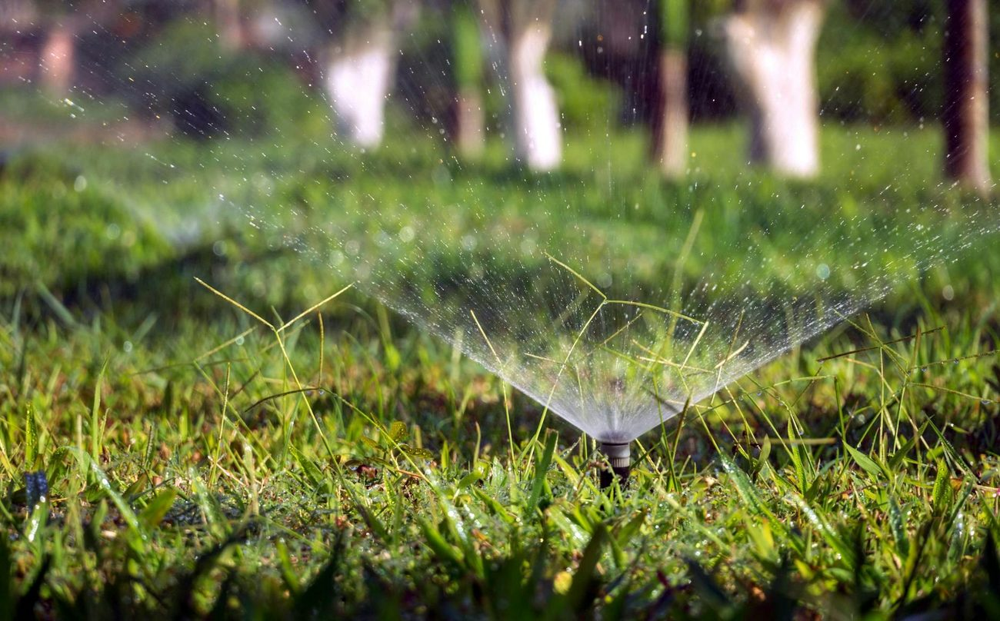
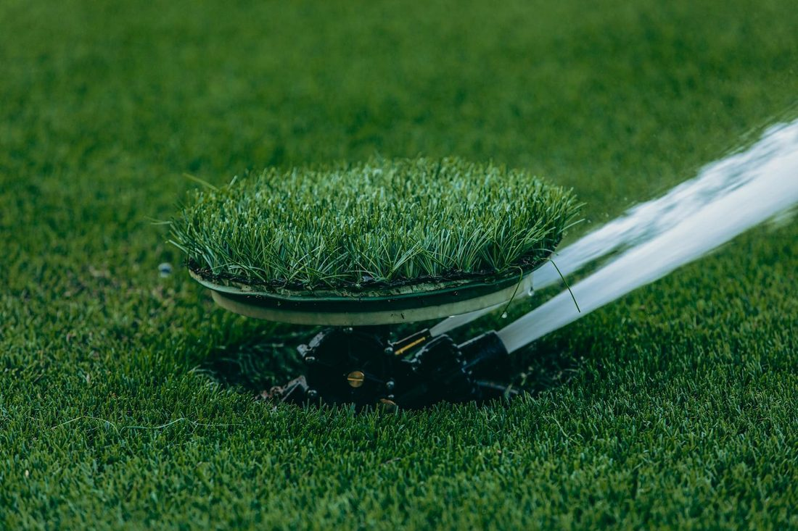
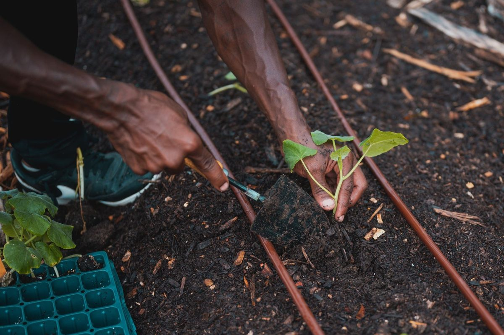
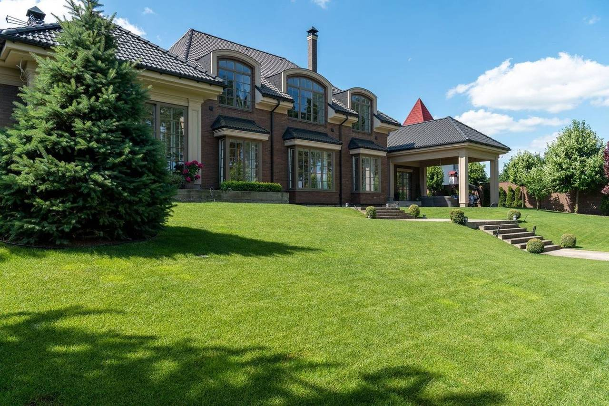

▦ GARTENBEWÄSSERUNG · GIFHORN-GAMSEN
Wasser, genau dorthin.
Automatisch.
Wir planen, verlegen und steuern die Bewässerung Ihres Gartens. Jede Zone bekommt die richtige Wurfweite und Wassermenge, damit der Rasen grün bleibt, ohne dass Sie den Schlauch in die Hand nehmen.
- 24 herreichbar, auch am Wochenende
- 5,0 ★bei 4 Google-Bewertungen
- InhabergeführtTobias Koslikow persönlich
- Region Gifhornkurze Wege, schnell vor Ort
▦ BEWÄSSERUNGSPLAN · VERMESSEN STATT RATEN
Erst der Plan,
dann das Grün.
Bevor der erste Spaten in den Boden geht, vermessen wir Ihren Garten und teilen ihn in Zonen ein. Für jede Zone berechnen wir Wurfweite, Reglertyp und Wassermenge, damit die Regner sauber überlappen und keine trockene Ecke bleibt.
- Wurfweite je Regner
- 4–12 m
- Wassermenge je Zone
- ≈ 18 l/min
- Zonen pro Garten
- 2–6
- Steuerung
- Computer · App · Sensor
- Leitungen
- unsichtbar verlegt
Werte sind typische Richtwerte und werden bei Ihnen vor Ort konkret berechnet.

▦ LEISTUNGEN · 01–06
Alles für eine Bewässerung,
die von allein läuft.
-
01
Vor-Ort-TerminBewässerungsplan
Planung & Aufmaß
Wir messen den Garten auf, teilen ihn in Zonen und berechnen Wurfweiten und Wasserbedarf. Sie bekommen einen klaren Bewässerungsplan.
-
02
Wurfweite 4–12 mGetriebe · Sprüh
Versenkregner & Sprühregner
Automatische Rasenbewässerung mit Pop-up-Reglern: im Betrieb fahren sie aus, danach verschwinden sie bündig im Rasen, sodass beim Mähen nichts im Weg steht.
-
03
Tropfer 2–8 l/hBeet · Hecke · Kübel
Tropfbewässerung
Wassersparend direkt an die Wurzel: für Beete, Hecken, Kübel und Hochbeete. Jeder Tropfer gibt nur so viel ab, wie die Pflanze braucht.
-
04
App · WLANRegen- & Feuchtesensor
Steuerung & Sensorik
Bewässerungscomputer mit Zeitplänen, per App und WLAN bedienbar. Regen- und Bodenfeuchte-Sensor schalten ab, wenn ohnehin genug Wasser da ist.
-
05
Brunnen · PumpeZisterne · Regenwasser
Wasserversorgung
Damit die Anlage günstig läuft, schließen wir Brunnen, Pumpe, Hauswasserwerk oder Zisterne an, auf Wunsch mit Regenwassernutzung.
-
06
24 h bei StörungFrühjahr · Herbst
Wartung & 24-h-Service
Inbetriebnahme im Frühjahr, Einwinterung im Herbst, Reparatur und Düsen-Justage. Bei einer Störung sind wir rund um die Uhr erreichbar.

▦ ABLAUF · VON DER ANFRAGE ZUM FERTIGEN GARTEN
In vier Schritten zur fertigen Anlage.
- 01
Anfrage & Vor-Ort-Termin
Sie rufen an, wir schauen uns den Garten an. Kostenlos und unverbindlich in der Region.
- 02
Aufmaß & Plan
Wir vermessen, planen die Zonen und besprechen Technik, Aufwand und Kosten transparent.
- 03
Installation
Leitungen werden unsichtbar verlegt und die Regner gesetzt, der Rasen bleibt weitgehend intakt.
- 04
Einweisung & Wartung
Wir richten App und Zeitpläne ein, weisen Sie ein und kümmern uns auch danach um die Anlage.

▦ WARTUNG · ÜBERS GANZE JAHR
Einmal installiert,
dauerhaft betreut.
-
↑
März–AprilFunktionsprüfung
Frühjahr · Inbetriebnahme
Anlage in Betrieb nehmen, Düsen prüfen und justieren, Zeitpläne auf die Saison einstellen.
-
→
24 h erreichbarbei Störung
Sommer · Anpassung & Störungsdienst
Beregnung an Hitze und Trockenheit anpassen; bei einer Störung sind wir rund um die Uhr erreichbar.
-
↓
Okt–NovAusblasen · Frostschutz
Herbst · Einwinterung
Anlage mit Druckluft ausblasen, damit kein Wasser in den Leitungen gefriert. Das ist der wichtigste Schutz vor Frostschäden.

▦ KONTAKT · GIFHORN-GAMSEN
Lassen Sie uns Ihren
Garten planen.
Rufen Sie an oder schreiben Sie kurz per WhatsApp, wann wir vorbeikommen sollen. Wir melden uns zuverlässig zurück.
Waldweg 29 · 38518 Gifhorn-Gamsen Route planen